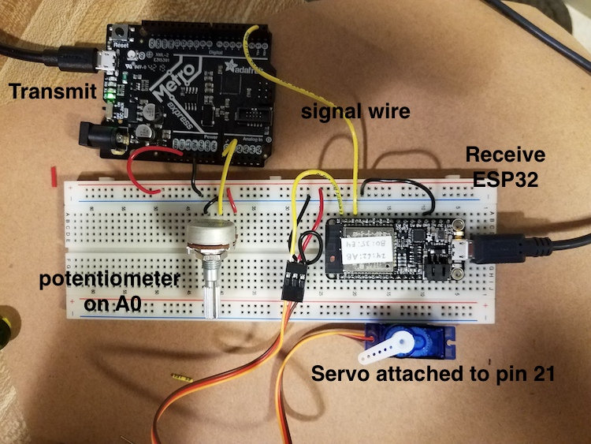
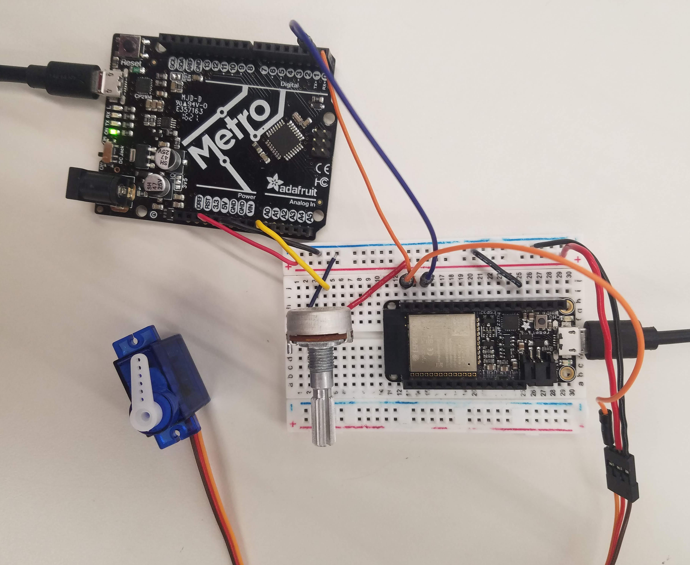
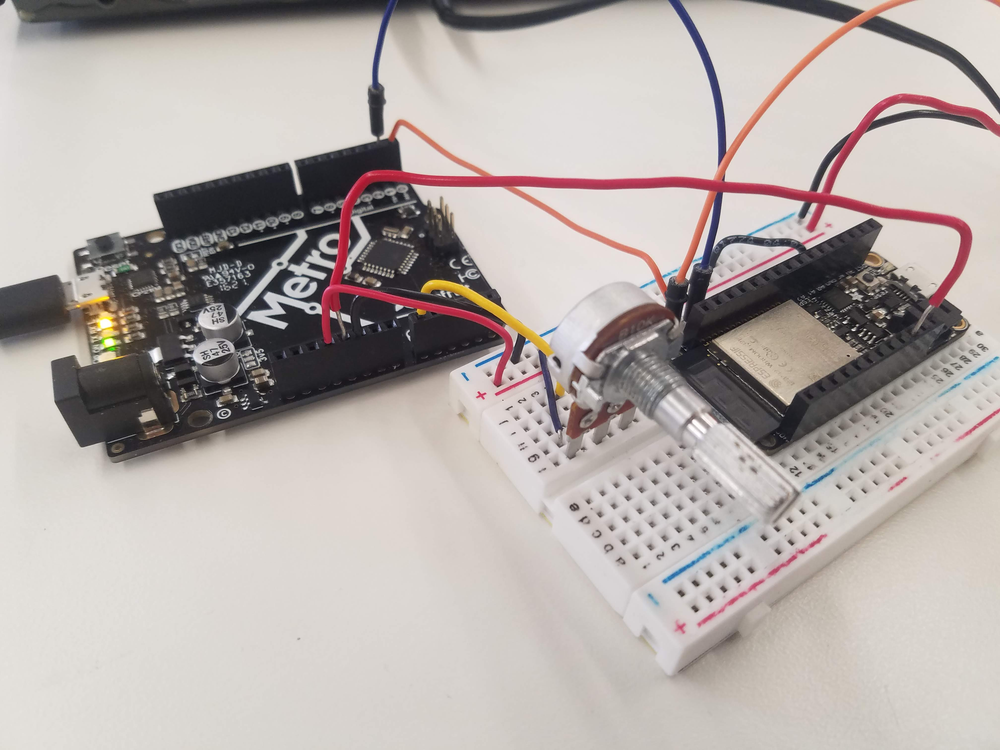

Week 9: Radio, WiFi, Bluetooth (IoT)
Work in progress!
This week, we focused on radio, WiFi, and bluetooth (IoT).
We were tasked with demonstrating communication between a microcontroller and another device. I completed the assignment by following two tutorials, one on the PHYSCI 70 website by Rob Hart and the other by on randomnerdtutorials.com by Rui Santos. Documentation for both projects is provided below.
Project 1: Communicating with UART Serial
I followed the tutorial linked here to facilitate communication between the Adafruit Metro microcontroller and an ESP32-based Feather board. The goal was to have a potentionmeter connected to the microcontroller, which would communicate with the ESP32 board to control the position of a servo motor connected to the latter.
On my first attempt, I replicated the wiring setup in the tutorial and tried to upload the code for both the Metro and ESP32 board provided in the tutorial. The wiring setup and code from the tutorial are shown below.
Wiring setup:
Metro microcontroller code:
//Code to transmit
//Microcontroller has a potentiometer input: wiper pin attached to analog in.
//Sends a signal to receiver through the USART transmit pin (TX) (or TX1 for some boards)
//Can receive a signal throught the USART receive pin (RX), but this is not
// implemented in this simplest sketch.
//The wired-together devices must share a common ground!
const int pot_pin = A0;
void setup() {
Serial.begin(0); //for the USB serial devices, this baud rate is meaningless - can be "0"
Serial1.begin(9600); //this is the USART SERIAL. On SAM boards, like Metro M0, ItsyBitsy and D11, this is called "Serial1". Baud rate is important on this one!
}
void loop() {
int pot_value = analogRead(pot_pin);
Serial.println(pot_value); //This is for diagnostic purposes
Serial1.write(pot_value/4); //This one is data sent to the other board. divide by four to make the range 0-255.
delay(10);
}
ESP32 board code:
//Code to move a servomotor in response to a change in input pin.
//Use as a simple example of receiving for a wired network 3/30/20. Rob Hart.
//modified to use with ESP32 Huzzah board July 2020. R.Hart
#include
Servo myservo; // create servo object to control a servo
void setup() {
myservo.attach(21); // attaches the servo on pin 9 to the servo object
Serial.begin(9600); //for the USB serial devices, this baud rate is meaningless - can be "0"
Serial1.begin(9600); //this is the USART SERIAL. On SAM boards, like ItsyBitsy and D11, this is called "Serial1"
//Baud rate is important on this one!
}
void loop() {
while (!Serial1.available()) { //wait until serial from UART is available.
}
byte rec_byte = Serial1.read(); //Here is where the incoming byte is read.
//Serial.println(rec_byte); //for diagnosing using USB serial
int degree = rec_byte*180/255; //conversion between one byte and 180 degrees.
Serial.println(degree); //for diagnosing using USB serial
myservo.write(degree);
}
The code for the microntroller and the ESP32 board would not upload and the program instead returned error messages for both. First, I focused on the microcontroller code. I quickly realized that the tutorial uses an Adafruit Metro Express microcontroller, which has two serial ports versus the microcontroller I was using, which only has one. Due to the fact that there was no "Serial1" on my board, the code would not upload without an error. So, I deleted the "Serial1.begin(9600);" line under void setup(){} and replaced the "Serial1.write(pot_value/4);" line under void loop(){} with "Serial.write(pot_value/4);". I also commented out the "Serial.println(pot_value);" line in the code. Having made these changes, I also changed the wiring so that instead of one signal wire connecting the TX1 pin on the microcontroller to the RX/16 pin on the ESP32 board, there were two wires (one connecting the microcontroller TX1 pin to the RX/16 pin on the ESP32 board and the other connecting the microcontroller RX0 pin to the TX/17 pin on the ESP32 board).
With respect to the code for the ESP32 board, I realized that the issue was the use of the ESP32Servo.h library. I downloaded the ESP32 Arduino Servo Library linked here and replaced the "#include <ESP32Servo.h>" line in the original code with "#include <Servo.h>". This fixed the uploading issue, and with that I was ready to test the device. The modified wiring setup and code are shown below.
Modified wiring setup:
Modified Metro microcontroller code:
//Code to transmit
//Microcontroller has a potentiometer input: wiper pin attached to analog in.
//Sends a signal to receiver through the USART transmit pin (TX) (or TX1 for some boards)
//Can receive a signal throught the USART receive pin (RX), but this is not
// implemented in this simplest sketch.
//The wired-together devices must share a common ground!
const int pot_pin = A0;
void setup() {
Serial.begin(9600);
}
void loop() {
int pot_value = analogRead(pot_pin);
//Serial.println(pot_value); //This is for diagnostic purposes
Serial.write(pot_value/4); //This one is data sent to the other board. divide by four to make the range 0-255.
delay(10);
}
Modified ESP32 board code:
//Code to move a servomotor in response to a change in input pin.
//Use as a simple example of receiving for a wired network 3/30/20. Rob Hart.
//modified to use with ESP32 Huzzah board July 2020. R.Hart
#include
Servo myservo; // create servo object to control a servo
void setup() {
myservo.attach(21); // attaches the servo on pin 9 to the servo object
Serial.begin(9600); //for the USB serial devices, this baud rate is meaningless - can be "0"
Serial1.begin(9600); //this is the USART SERIAL. On SAM boards, like ItsyBitsy and D11, this is called "Serial1"
//Baud rate is important on this one!
}
void loop() {
while (!Serial1.available()) { //wait until serial from UART is available.
}
byte rec_byte = Serial1.read(); //Here is where the incoming byte is read.
//Serial.println(rec_byte); //for diagnosing using USB serial
int degree = rec_byte*180/255; //conversion between one byte and 180 degrees.
Serial.println(degree); //for diagnosing using USB serial
myservo.write(degree);
}
Video:
As you can see in the pictures and video above, I powered both the Metro microcontroller and ESP32 separately using USB cables connected to my laptop. I also wanted to see if the microcontroller could be used to power the ESP32 board. I first tried connecting the 3.3V pin on the microcontroller to the the 3V pin on the ESP32 board without success. After looking at the pinout diagram of the ESP32 board, I noticed that there was a USB pin. I promptly connected the 5V pin from the microcontroller to the USB pin on the ESP32 board, and it powered on.
Wiring setup:
Video:
Project 2: ESP32 Servo Motor Web Server with Arduino IDE
For my second project, I followed the tutorial linked here to facilitate communication between the ESP32 board and a servo motor through a web server. The goal was to have a slider on the web server to control the position of the servo motor (between 0º and 180º) using a pulse width modulation (PWM) signal.
I attached the servo motor to the 13/A12 pin on the ESP32 board and uploaded the following code from the tutorial to it, substituting the wifi name and password for "REPLACE_WITH_YOUR_SSID" and "REPLACE_WITH_YOUR_PASSWORD":
/*********
Rui Santos
Complete project details at http://randomnerdtutorials.com
*********/
#include
#include
Servo myservo; // create servo object to control a servo
// twelve servo objects can be created on most boards
// GPIO the servo is attached to
static const int servoPin = 13;
// Replace with your network credentials
const char* ssid = "REPLACE_WITH_YOUR_SSID";
const char* password = "REPLACE_WITH_YOUR_PASSWORD";
// Set web server port number to 80
WiFiServer server(80);
// Variable to store the HTTP request
String header;
// Decode HTTP GET value
String valueString = String(5);
int pos1 = 0;
int pos2 = 0;
// Current time
unsigned long currentTime = millis();
// Previous time
unsigned long previousTime = 0;
// Define timeout time in milliseconds (example: 2000ms = 2s)
const long timeoutTime = 2000;
void setup() {
Serial.begin(115200);
myservo.attach(servoPin); // attaches the servo on the servoPin to the servo object
// Connect to Wi-Fi network with SSID and password
Serial.print("Connecting to ");
Serial.println(ssid);
WiFi.begin(ssid, password);
while (WiFi.status() != WL_CONNECTED) {
delay(500);
Serial.print(".");
}
// Print local IP address and start web server
Serial.println("");
Serial.println("WiFi connected.");
Serial.println("IP address: ");
Serial.println(WiFi.localIP());
server.begin();
}
void loop(){
WiFiClient client = server.available(); // Listen for incoming clients
if (client) { // If a new client connects,
currentTime = millis();
previousTime = currentTime;
Serial.println("New Client."); // print a message out in the serial port
String currentLine = ""; // make a String to hold incoming data from the client
while (client.connected() && currentTime - previousTime <= timeoutTime) { // loop while the client's connected
currentTime = millis();
if (client.available()) { // if there's bytes to read from the client,
char c = client.read(); // read a byte, then
Serial.write(c); // print it out the serial monitor
header += c;
if (c == '\n') { // if the byte is a newline character
// if the current line is blank, you got two newline characters in a row.
// that's the end of the client HTTP request, so send a response:
if (currentLine.length() == 0) {
// HTTP headers always start with a response code (e.g. HTTP/1.1 200 OK)
// and a content-type so the client knows what's coming, then a blank line:
client.println("HTTP/1.1 200 OK");
client.println("Content-type:text/html");
client.println("Connection: close");
client.println();
// Display the HTML web page
client.println("");
client.println("");
client.println("");
// CSS to style the on/off buttons
// Feel free to change the background-color and font-size attributes to fit your preferences
client.println("");
client.println("");
// Web Page
client.println("ESP32 with Servo
");
client.println("Position:
");
client.println("");
client.println("");
client.println("");
//GET /?value=180& HTTP/1.1
if(header.indexOf("GET /?value=")>=0) {
pos1 = header.indexOf('=');
pos2 = header.indexOf('&');
valueString = header.substring(pos1+1, pos2);
//Rotate the servo
myservo.write(valueString.toInt());
Serial.println(valueString);
}
// The HTTP response ends with another blank line
client.println();
// Break out of the while loop
break;
} else { // if you got a newline, then clear currentLine
currentLine = "";
}
} else if (c != '\r') { // if you got anything else but a carriage return character,
currentLine += c; // add it to the end of the currentLine
}
}
}
// Clear the header variable
header = "";
// Close the connection
client.stop();
Serial.println("Client disconnected.");
Serial.println("");
}
}
I then copied the code below into a new Sublime Text file and saved it as an HTML file. You can also use Notepad for this step if you want!
Powered by w3.css
Mohammed Mutaher 2022